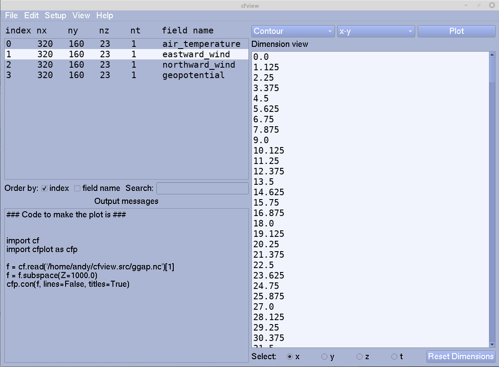

cf-view documentation¶
Exploration & plotting GUI for netCDF & Met Office format data
Overview¶
cf-view is a Graphical User Interface (GUI) for earth science and aligned research which supports the exploration, analysis and plotting of netCDF and Met Office format (PP or fields) data.
{kind=link}
It is intended to be an updated replacement and improvement on the xconv+ tool, using the power of:
Python (PyQt) for the GUI;
cf-plot (building on top of matplotlib and Cartopy) for the plotting;
cf-python for the data reading, processing and analysis; and
cfdm for the underlying data model.
It is designed to be a useful tool for environmental, earth and aligned sciences, for example to facilitate climate and meteorological research. cf-view is developed and maintained by the NCAS-CMS group, part of NCAS.
Features¶
With cf-view you can, in a self-contained specialised GUI environment:
Inspect, analyse and manipulate field constructs and their data;
Edit, delete and create field metadata and properties;
Output the underlying cf-python and cf-plot code;
View and produce plots such as map, contour, zonal means, vector, line and trajectory plots;
Change plotting properties such as map, colour scale, contour levels and vector properties; and
Change interface colour scheme, fonts and font sizes.
Future releases will add support for data:
with 2D dimensions;
defined on rotated pole grids;
defined on unstructured grids i.e. UGRID data.
Quickstart¶
After installing (see below), start cf-view through the command line via running:
cfview
or if you wish to start working with a specific file, add a positional argument:
cfview <file>
where <file> is the path to the netCDF, Met Office PP or fields
file.
Note: when starting cf-view for the first time, it might take twenty or so seconds to start while matplotlib does some initialisation work.
Installation¶
There are two main ways to install cf-view: through a package manager, or by downloading and running a dedicated installation script.
Installation by package manager¶
You can use pip with conda (or similar package managers such as
mamba) as follows.
To use pip, run:
pip install cf-python cf-plot cf-view
In future you will be able to install cf-view and all of its
dependencies fully with conda, but for now only the dependencies are
installable this way, like so:
conda install -c ncas -c conda-forge cf-python cf-plot udunits2
and you must use e.g. pip to install the cf-view library itself.
Installation by download script¶
Alternatively, to install cf-view with its required dependencies, you can download from source. For Linux, run:
wget http://gws-access.jasmin.ac.uk/public/ncas_climate/ajh/cfview_install/cfview_install.sh
or for Mac, instead run:
curl -O -L http://gws-access.jasmin.ac.uk/public/ncas_climate/ajh/cfview_install/cfview_install.sh
and then install by running the cfview_install.sh script, for
example with:
bash cfview_install.sh
Further installation information¶
More detail about installation is provided on the installation
page
(https://ajheaps.github.io/cf-view/download.html) of the
documentation.
Contributing¶
Everyone is welcome to contribute to cf-view in the form of bug reports, documentation, code, design proposals, and more.
Contributing guidelines will be added to the repository shortly.
Help: Issues, Questions, Feature Requests, etc.¶
For any queries, see the guidance
page
(https://ajheaps.github.io/cf-view/issues.html).